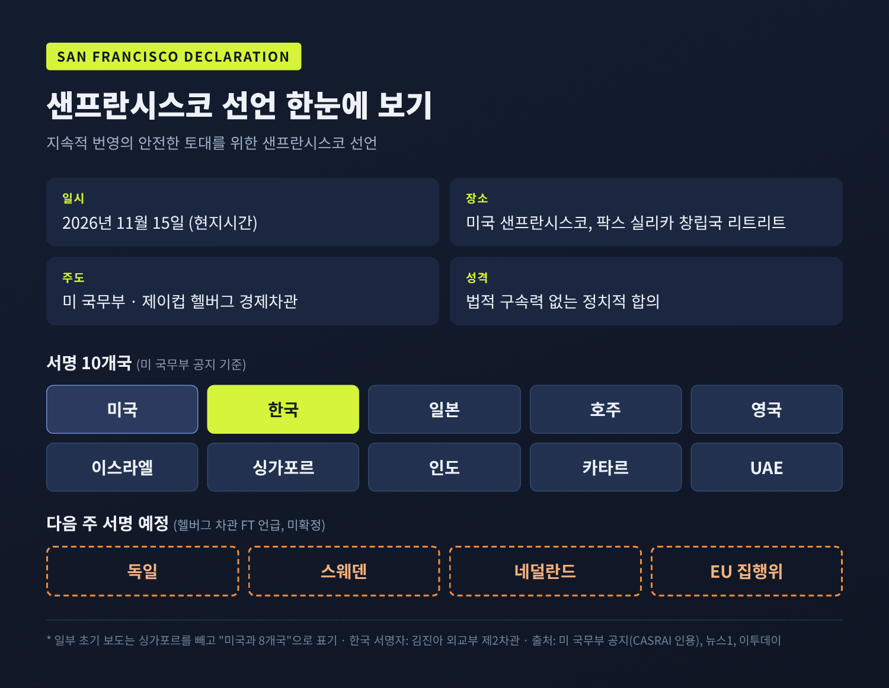
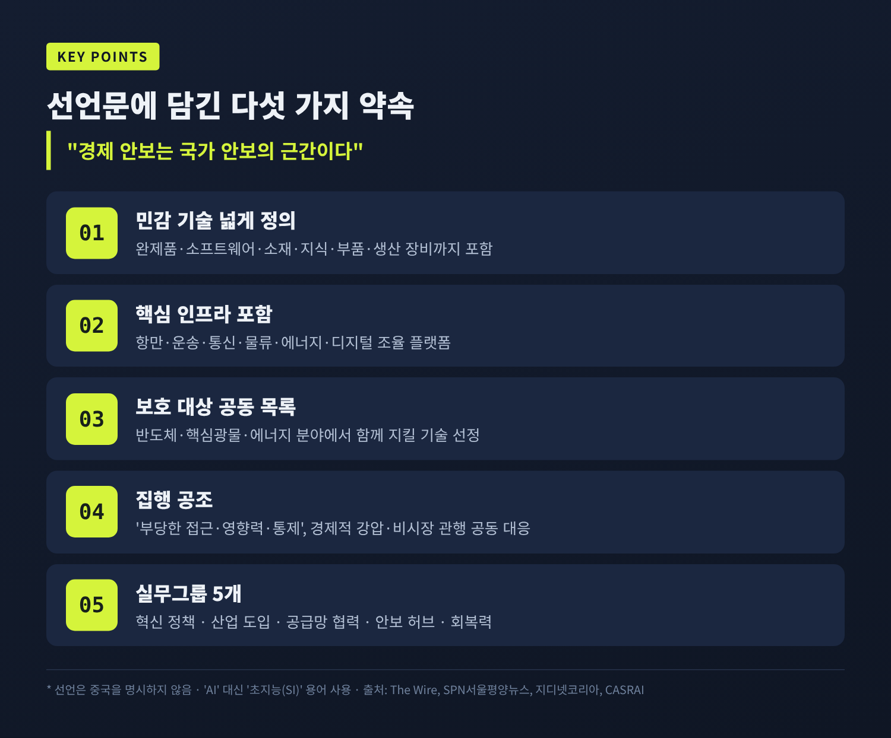
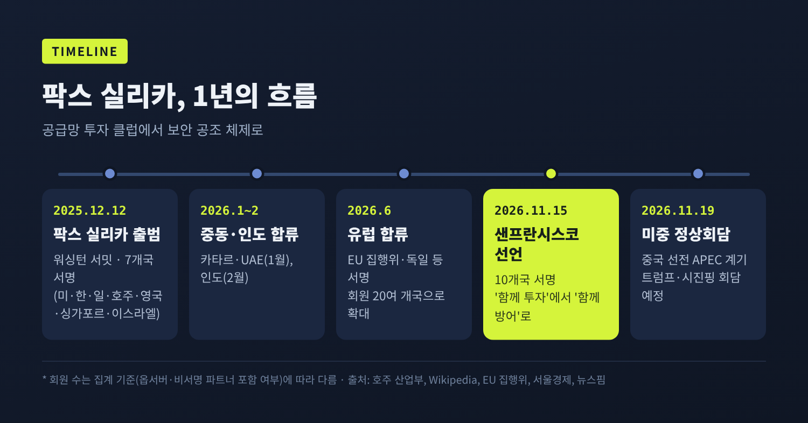
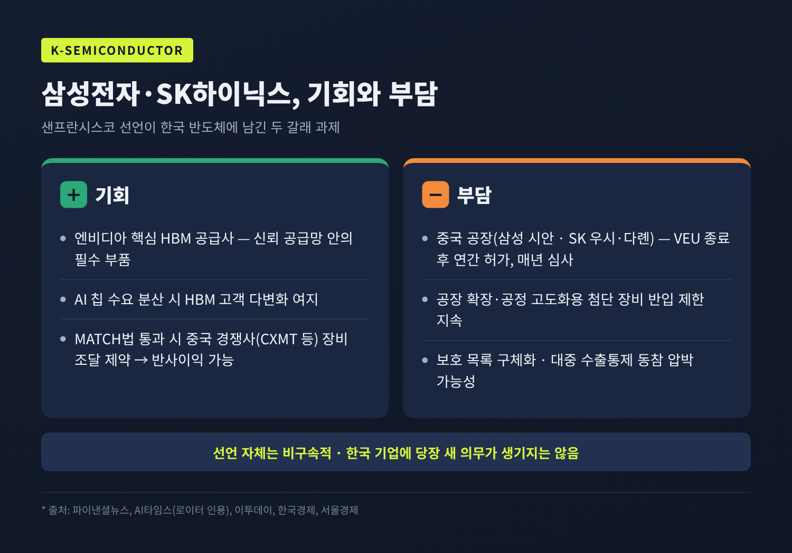
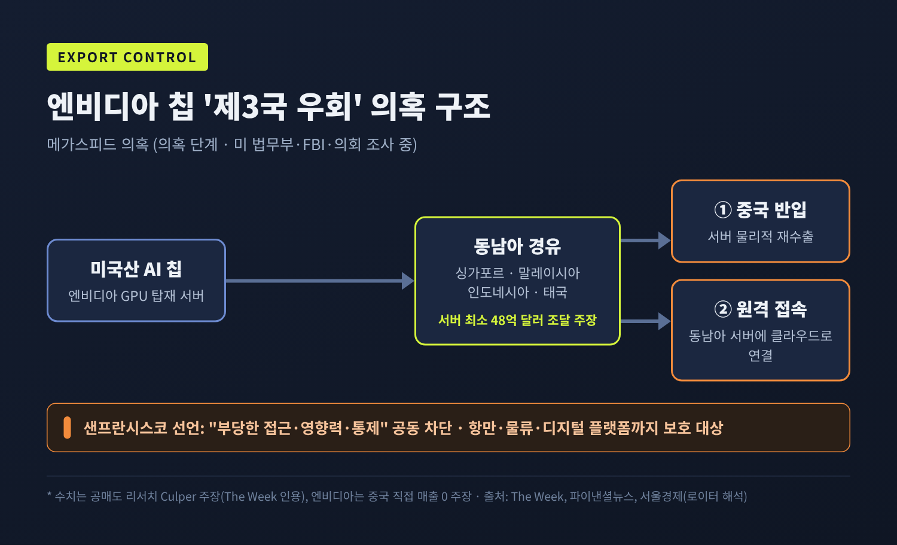

팍스 실리카 샌프란시스코 선언, 한국 등 10개국 AI 공급망 공동 보호 합의

이번 글에서는 미국 주도 '팍스 실리카(Pax Silica)' 틀에서 나온 샌프란시스코 선언을 정리해 보겠습니다. 무엇에 합의했는지, 한국 반도체 산업에는 어떤 의미인지, 중국과 유럽은 어떻게 보고 있는지까지 차례로 살펴봅니다.
세 줄 요약
- 11월 15일(현지시간) 미국·한국·일본 등 10개국이 AI 공급망의 민감 기술과 핵심 인프라를 함께 지키자는 '샌프란시스코 선언'에 서명했습니다.
- 한국은 김진아 외교부 제2차관이 서명했습니다. 법적 구속력은 없는 정치적 합의입니다.
- 선언은 중국을 명시하지 않았지만, 제3국을 거친 기술 유출 차단과 공급망 다변화가 핵심이라 한국 반도체에는 기회와 부담이 함께 남습니다.
■ 샌프란시스코에서 무엇이 서명됐나
선언의 정식 명칭은 '지속적 번영의 안전한 토대를 위한 샌프란시스코 선언'입니다. 제이컵 헬버그 미 국무부 경제차관이 소집한 '팍스 실리카 창립국 리트리트'에서 서명이 이뤄졌습니다.
서명국은 미국 국무부 공지 기준 10개국입니다. 미국, 한국, 일본, 호주, 영국, 이스라엘, 싱가포르, 인도, 카타르, 아랍에미리트(UAE)가 이름을 올렸습니다.
일부 국내 보도는 "미국과 8개국"이라고 적었습니다. 파이낸셜타임스(FT) 첫 보도를 옮기면서 싱가포르가 빠진 것으로 보입니다. 국무부 공지를 인용한 매체들은 싱가포르를 포함해 미국 외 9개 파트너로 전했습니다.
추가 서명도 예고됐습니다. 헬버그 차관은 FT에 독일·스웨덴·네덜란드와 EU 집행위원회가 다음 주 서명할 것이라고 밝혔습니다. 다만 아직은 '예상'일 뿐, 확정된 서명은 아닙니다.

■ 선언문에 담긴 다섯 가지 약속
선언의 출발점은 한 문장입니다. "경제 안보는 국가 안보의 근간이다."
그 위에 구체적인 약속이 올라갑니다.
- 민감 기술을 넓게 정의했습니다. 완제품뿐 아니라 소프트웨어, 소재, 지식, 부품, 생산 장비까지 포함됩니다. 적대 세력이 빼돌리면 군사·정보·경제적 우위를 줄 수 있는 기술이 기준입니다.
- 핵심 인프라도 묶었습니다. 항만, 운송, 통신, 물류, 에너지 설비, 그리고 이를 조율하는 디지털 플랫폼이 대상입니다.
- 보호 대상 공동 목록을 만듭니다. 반도체·핵심광물·에너지 분야에서 함께 지킬 기술과 공급망을 고르기로 했습니다.
- 집행을 공조합니다. "부당한 접근·영향력·통제"에 맞서는 정책을 함께 집행하고, 경제적 강압과 비시장적 관행에 공동 대응합니다.
- 실무그룹 5개를 꾸립니다. 혁신 정책, 핵심 산업 분야 도입, 기술 공급망 협력, 세이프 하버·안보 허브, 안보·회복력이 그 축입니다. AI 투자를 끌어올 경제 거점 조성도 여기서 다룹니다.
헬버그 차관의 설명은 이렇습니다. 반도체 설계 노하우, 제조 장비, 완성품을 실어 나르는 항만이 모두 다른 나라에 있을 수 있다는 것입니다. 그래서 기술과 그 뒤의 인프라를 "공동 책임"으로 다루기로 한 점이 역사적이라고 했습니다.
눈에 띄는 대목이 하나 더 있습니다. 선언은 'AI'보다 '초지능(Super Intelligence, SI)'이라는 표현을 앞세웠습니다. 국무부는 "어떤 나라도 초지능 시대의 토대를 홀로 지킬 수 없다"고 밝혔습니다.

■ 팍스 실리카는 어디서 출발했나
팍스 실리카는 2025년 12월 12일 워싱턴에서 출범했습니다. 첫 선언에는 미국, 한국, 일본, 호주, 영국, 싱가포르, 이스라엘 7개국이 서명했습니다. 한국은 창립 멤버인 셈입니다.
당시 선언은 과도한 의존을 줄이고, 신뢰할 수 있는 파트너끼리 공급망을 짜자는 내용이었습니다. 칩·컴퓨팅, 첨단 제조, 물류, 광물 가공, 에너지, 광케이블과 데이터센터까지 협력 범위에 올랐습니다. 헬버그 차관은 출범 직후 "세계 희토류의 90%를 단일 행위자가 통제한다"고 짚었습니다. 이름을 말하지 않았지만 누구를 가리키는지는 분명했습니다.
이후 몸집은 빠르게 커졌습니다. 2026년 1월 카타르와 UAE, 2월 인도가 합류했습니다. 6월에는 EU 집행위원회와 독일이 이름을 올렸고, 중남미·북유럽 국가들도 뒤를 이었습니다. 보도에 따라 집계가 다르지만 현재 회원은 20여 개국에 이릅니다.
예전 팍스 실리카는 '함께 투자하자'는 선언에 가까웠습니다. 이번 샌프란시스코 선언은 '함께 지키자'는 쪽으로 무게가 옮겨갔습니다. 투자 협력 클럽이 보안 공조 체제로 한 단계 넘어간 것입니다.

■ 한국은 누가, 어떤 입장으로 서명했나
한국 측 서명자는 김진아 외교부 제2차관입니다. 외교부는 이번 선언을 "비구속적인 정치적 합의"라고 설명했습니다. 안정적이고 신뢰할 수 있는 AI 공급망을 만들고 경제안보 협력을 강화하는 것이 목적이라는 것입니다.
"중국을 겨냥한 것이냐"는 질문에는 선을 그었습니다. 외교부 당국자는 특정 국가를 명시하지 않았다고 답했습니다. 공급망 다변화와 기술 혁신, 핵심 인프라 보호는 모든 나라의 공동 과제라는 설명도 덧붙였습니다.
김 차관은 16일(현지시간) 헬버그 차관과 따로 만나 경제안보 협력과 호혜적 무역·투자 방안을 논의할 예정입니다. 김 차관은 지난 6월 회의에서도 반도체 공급망 안정은 한 나라만의 힘으로 어렵다고 강조한 바 있습니다.
정부의 표현은 조심스럽습니다. 최대 교역 상대 중 하나인 중국을 의식한 결과로 읽힙니다. 그렇다고 이 틀에서 빠질 수도 없는 처지입니다.
■ 삼성전자·SK하이닉스에는 기회일까, 부담일까
먼저 기회 쪽입니다. 삼성전자와 SK하이닉스는 엔비디아의 핵심 고대역폭메모리(HBM) 공급사입니다. 신뢰 파트너끼리 AI 공급망을 묶는 구조라면, 한국 메모리는 그 안의 필수 부품입니다. AI 칩 수요가 AMD·구글 등으로 퍼지면 HBM 고객을 넓힐 여지도 생깁니다.
미국 의회의 MATCH법(다자간 하드웨어 기술통제 정렬법)도 양면적입니다. 이 법안은 동맹국이 240일 안에 미국 수준의 장비 수출통제를 갖추도록 요구합니다. CXMT 같은 중국 경쟁사의 장비 조달이 막히면 한국 기업이 반사이익을 볼 수 있습니다. CXMT의 D램 매출 점유율은 2025년 4분기 5% 수준이었습니다.
부담도 분명합니다. 가장 큰 것은 중국 공장입니다. 삼성전자 시안(낸드), SK하이닉스 우시(D램)·다롄(낸드)이 모두 중국에 있습니다.
미국은 2025년 말 두 회사 중국 공장의 '검증된 최종사용자(VEU)' 지위를 거둬들였습니다. 대신 1년치 장비를 미리 신청해 일괄 승인받는 연간 허가제로 바꿨습니다. 건별 허가라는 최악은 피했지만, 해마다 심사를 받아야 합니다. 공장 확장이나 공정 고도화용 첨단 장비 반입은 여전히 막혀 있습니다. SK하이닉스는 지금도 다롄 공장의 2027년분 장비 허가를 따로 협의하고 있습니다.
이번 선언의 '보호 대상 공동 목록'이 구체화되면 상황은 더 복잡해질 수 있습니다. 목록에 오른 장비·소재·기술은 서명국 모두가 함께 관리해야 하기 때문입니다. 한국이 미국 수준의 대중 수출통제에 동참하라는 요구를 받을 가능성도 거론됩니다. 유지영 국립외교원 교수는 MATCH법이 통과되면 미국이 양자 협상을 요구할 수 있다고 내다봤습니다.

■ 엔비디아 칩 우회 논란과 맞닿은 지점
선언문의 "부당한 접근·통제" 조항은 최근 수출통제 논란과 겹쳐 읽힙니다. 로이터는 이번 합의를 중국이 장비와 기술을 들여올 때 써온 제3국 우회로를 막으려는 시도로 해석했습니다.
대표 사례가 싱가포르 클라우드 업체 메가스피드(Megaspeed)를 둘러싼 의혹입니다. 미 법무부와 FBI, 의회가 엔비디아 칩이 수출 제한에도 중국에 흘러갔는지 들여다보고 있습니다. 공매도 리서치 업체 컬퍼(Culper)는 메가스피드의 말레이시아 자회사가 엔비디아 칩 탑재 서버를 최소 48억 달러어치 조달했다고 주장했습니다. 메가스피드 매출은 3년 만에 3300만 달러에서 30억 달러로 불었다고 합니다.
의심받는 방식은 두 가지입니다. 하나는 싱가포르·말레이시아·인도네시아·태국을 거쳐 서버를 중국으로 옮기는 경로입니다. 다른 하나는 동남아에 서버를 두고 중국 기업이 클라우드로 원격 접속하는 방식입니다. 말레이시아 당국도 현지 자회사의 재수출 여부를 조사 중입니다. 아직은 의혹 단계이고, 엔비디아는 중국 직접 매출이 0으로 떨어졌다고 밝혀 왔습니다.
이 논란은 엔비디아 경영진 교체로까지 번졌습니다. 미 의회에서는 칩 위치 추적 의무화와 해외 데이터센터를 통한 중국의 연산 접근 제한이 논의되고 있습니다.
흥미로운 점은 싱가포르가 이번 선언의 서명국이라는 사실입니다. 칩이 지나가는 길목에 있는 나라를 '지키는 쪽'으로 끌어들인 셈입니다. 선언이 공급망의 '길'까지 보호 대상으로 묶은 이유가 여기서 드러납니다.

■ 중국과 유럽은 어떻게 보고 있나
중국 외교부가 샌프란시스코 선언에 따로 낸 공식 논평은 16일 현재 확인되지 않습니다. 다만 그간의 입장은 일관됩니다. 2025년 12월 팍스 실리카 출범 때는 "시장경제와 공정경쟁 원칙을 따라야 한다"고 했습니다. 올해 8월 린젠 대변인은 AI 문제에서 편 가르기와 진영 대결에 단호히 반대한다고 밝혔습니다.
이번 선언 뒤에도 비슷한 목소리가 나왔습니다. 우신보 푸단대 교수는 미국과 동맹이 세계 질서를 정하려는 시도는 "더 이상 통하지 않는다"고 했습니다. 신화통신은 일방주의·보호주의 속에서 아시아·태평양 경제가 더 협력해야 한다고 주장했습니다.
시점도 공교롭습니다. 선언은 19일 중국 선전에서 열리는 미중 정상회담을 나흘 앞두고 공개됐습니다. 중국 정부는 같은 날 트럼프·시진핑·푸틴 3자 회담도 확인했습니다. 협상 테이블에 앉기 전, 미국이 동맹의 결속부터 보여준 셈입니다.
유럽은 신중합니다. 독일·스웨덴·네덜란드·EU는 이미 팍스 실리카 회원이지만 이번 선언에는 첫날 서명하지 않았습니다. 유로뉴스에 따르면 EU 회원국들은 초안을 본 뒤 정의가 지나치게 넓다는 점, 규제 자율성, '초지능'이라는 용어를 문제 삼았습니다. 일부는 민감 기술을 고를 객관적 기준부터 요구했습니다.
■ 앞으로 지켜볼 것
첫째, 다음 주 유럽의 서명 여부입니다. 독일·네덜란드가 합류하면 반도체 장비 강국이 대부분 같은 틀에 들어옵니다. 네덜란드는 노광 장비, 한국은 메모리, 일본은 소재·장비의 핵심 국가입니다.
둘째, 보호 대상 공동 목록의 범위입니다. 목록이 넓어질수록 한국 기업의 중국 사업에 걸리는 부담도 커집니다. 실무그룹에서 어떤 기준이 나올지가 관건입니다.
셋째, 19일 미중 정상회담의 결과입니다. 무역 휴전 이행을 두고 양국의 신경전이 이어지고 있습니다. 회담 분위기에 따라 선언의 실제 무게도 달라질 것입니다.
한계도 분명히 해 둘 필요가 있습니다. 이번 선언은 법적 구속력이 없습니다. 보호 범위와 기준은 아직 정해지지 않았습니다. 당장 한국 기업에 새 의무가 생기는 것은 아닙니다.
정리하면 이렇습니다. 예전 반도체 경쟁은 누가 더 좋은 칩을 만드느냐의 싸움이었습니다. 이제는 그 칩이 어떤 길을 거쳐 누구 손에 들어가느냐까지 관리하는 싸움이 됐습니다.
"칩을 만드는 나라에서, 칩의 길을 함께 지키는 나라로."
한국이 이 틀 안에서 얻을 것과 내줄 것을 따져야 할 시간입니다. 그 계산이 쉽겠느냐고 물으신다면, 쉽지 않지만 피할 수도 없는 숙제라고 답하겠습니다.
출처
- CASRAI, "Pax Silica partners sign AI supply-chain pact" (미 국무부 공지 인용) — https://casrai.org/news/pax-silica-san-francisco-declaration-2026 (2026-11-16)
- The Wire, "India Signs New Pax Silica Declaration on Jointly Protecting AI Supply Chains" — https://m.thewire.in/article/trade/india-signs-new-pax-silica-declaration-on-jointly-protecting-ai-supply-chains-critical-infrastructure (2026-11-16)
- TRT World(아나돌루), "US, nine partners sign pact to secure AI supply chains" — https://www.trtworld.com/article/bae20f6b5c22 (2026-11-16)
- 뉴스1, "韓, 美 주도 AI 공급망 보호 '샌프란시스코 선언' 서명" — https://www.news1.kr/diplomacy/defense-diplomacy/6355451 (2026-11-16)
- SPN 서울평양뉴스, "韓, 샌프란 선언에 서명" — https://www.spnews.co.kr/news/articleView.html?idxno=112667 (2026-11-16)
- 뉴스핌, "美·동맹국, 대중국 AI 공급망 보호 '샌프란시스코 선언' 서명…한국도 참여" — https://www.newspim.com/news/view/20261116000300 (2026-11-16)
- 지디넷코리아, "미국, 한국 등 8개국과 AI 공급망 결속…중국 의존 낮춘다" — https://zdnet.co.kr/view/?no=20261116090349 (2026-11-16)
- 이투데이, "미국, 한국 등 동맹과 AI 공급망 보호 협약⋯'팍스 실리카' 박차" — https://www.etoday.co.kr/news/view/2648848 (2026-11-16)
- Seoul Economic Daily, "U.S. Rallies 10 Nations Behind AI Supply Chain Pact Against China" — https://en.sedaily.com/world/2026/11/16/us-rallies-10-nations-behind-ai-supply-chain-pact-against (2026-11-16)
- 파이낸셜뉴스, "미중 AI 패권 재편에 韓반도체 '촉각'" — https://www.fnnews.com/news/202611141203121132 (2026-11-14)
- 호주 산업과학자원부, "The Pax Silica Declaration, 12 December 2025" — https://www.industry.gov.au/publications/pax-silica-declaration-countries-attending-pax-silica-summit-12-december-2025
- 미 국무부, 제이컵 헬버그 차관 화상 브리핑 — https://www.state.gov/virtual-press-briefing-with-jacob-helberg-under-secretary-of-state-for-economic-affairs-on-ai-supply-chain-security (2025-12-16)
- Wikipedia, "Pax Silica" — https://en.wikipedia.org/wiki/Pax_Silica
- European Commission, "Commission signs Pax Silica declaration" — https://digital-strategy.ec.europa.eu/en/news/commission-signs-pax-silica-declaration (2026-06-25)
- AI타임스, "미국, 삼성·SK하이닉스 반도체 장비 중국 수출 승인…연간 라이선스 전환" — https://www.aitimes.com/news/articleView.html?idxno=205190 (2025-12-31)
- 이투데이, "SK하이닉스, 中 다롄공장 장비 반입 정상 진행" — https://www.etoday.co.kr/news/view/2644079 (2026-11-04)
- 한국경제, MATCH법 관련 보도 — https://www.hankyung.com/article/202604227720g (2026-04-22)
- The Week, "Did Nvidia chips end up in Chinese hands?" — https://www.theweek.in/news/biz-tech/2026/11/11/nvidia-investigation-china-links.amp.html (2026-11-11)
- Streamline Feed, "China Denounces US Zero-Sum Demands Over Global AI Partnerships" — https://streamlinefeed.co.ke/news/china-denounces-us-zero-sum-demands-over-global-artificial-intelligence-partnerships (2026-08-19)